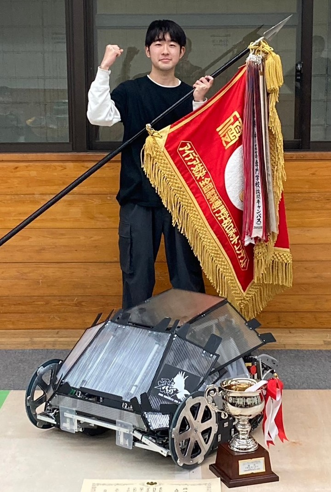

Hoshikawa Koki / 星川 聖

2020年大阪公立大学工業高等専門学校へ入学。現在は4年生に在籍しています。
小さいころから工作が大好きで小-中学生でロボットに強い興味を持ちました。
高専入学後「高専ロボコン」に参加するろぼっと倶楽部へ入部。
全国大会優勝を目指して主にハードウェアとチームリーダーを担当してきました。
現在は「人をわくわくさせるものを作る」という精神で様々な分野の技術を勉強中です!
Skills
| Soft |
|
| ・Creo Parametric |
| ・SOLIDWORKS |
| ・Fusion360 |
| ・Arduino IDE |
| ・Kicad |
| Language |
|
| ・HTML |
| ・CSS |
| ・C++ |
| ・Google App Script |
| ・Python |
| Machine Tools |
|
| ・ボール盤 |
| ・旋盤 |
| ・3Dプリンタ |
| ・レーザーカッター |
| ・CNCフライス |
Award
・高専ロボコン2023 全国大会優勝(外部リンク)
・高専ロボコン2023 近畿地区アイデア賞,全国推薦(外部リンク)
・The Championship of Robotics Engineers 2023
競技優勝,革新的技術賞(外部リンク)
・高専ロボコン2022 近畿地区 技術賞 ベスト4(外部リンク)
・近畿地区合同ロボコン2021 デザイン賞
ベスト4(外部リンク)
・高専ロボコン2021近畿地区
協賛企業特別賞 マブチモーター株式会社(外部リンク)
Projects